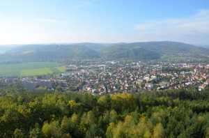
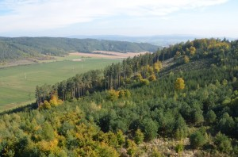
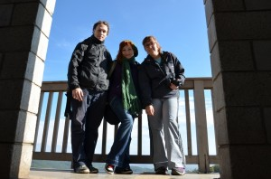
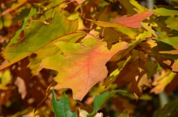
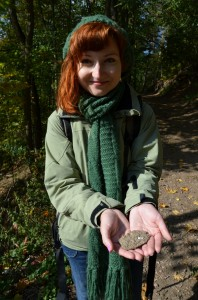
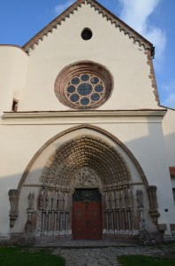
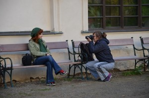

Po dnešních zprávách o počasí a shlédnutí snímků zasněžených Čech se ani nechce věřit, že ještě před 14ti dny jsme si užívali nádherného slunečného počasí. Já si tedy užila horského sluníčka ještě o další týden později při zcela neplánovaném zabloudění do Českého Jiřetína, ale o tomto dobrodružství třeba zase někdy jindy ;-). Dnes se zatouláme alespoň ve vzpomínkách na pravděpodobně poslední letošní výpravu – do Tišnova u Brna.
Na výlet nás vytáhla Nezdař. Bohužel se nikomu z nás nepodařilo zlanařit další výletníky, takže jsme jeli v komorním složení. Přestože jsem počítala spíš s tou horší variantou počasí a nezapomněla přibalit rukavice :D, byla jsem nakonec příjemně překvapená, že už kousek za Brnem vykouklo sluníčko a drželo se nás po celý den. Nejprve jsme se vydali vlakem do obce Hradčany (asi 20 minut od Brna), odkud jsme započali náš výstup na rozhlednu Klucanina, která je od roku 2003 dominantou Tišnova. Nejedná se o nijak náročný pochod, takže nás to zas tak moc nezmohlo. Po cestě nás zabavilo především několik tabulí naučné stezky, u kterých jsme se dozvěděli spoustu zajímavostí o místní fauně a flóře :D. Vůbec celá trasa Tišnov – Klucanina je ideálním výletem pro rodiny s dětmi, které nahoře čeká dřevěné „bludiště“ – sami jsme ho otestovali :D…
Rozhledna Klucanina má charakteristický tvar čtyřboké věže s nízkou stanovou střechou a zdobí ji výrazný vyhlídkový ochoz. Dobrá zpráva je, že Klucanina je zdarma přístupná po celý rok a je z ní opravdu nádherný výhled do kraje… geolovce možná nalákám také na to, že přímo uvnitř rozhledny je velmi důmyslně ukrytá keška ;-)!
Krásný výhled na město......i na lesyVrcholovka
Mezitím nám už docela vyhládlo, takže další program byl jasný – sestup dolů do Tišnova a oběd :-). Vybrali jsme si první restauraci, kterou jsme měli na ráně. Nacházela se v zajímavé víceúčelové budově, která zřejmě sloužila jako kino, tělocvična a kdovíco ještě. Krom jednoho štamgasta v ní bylo pusto a prázdno, ale meníčko měli výborné. Ve stavu přecpanosti už se nám pochopitelně nikam šlapat nechtělo, ale hecnuli jsme se ještě k návštěvě nedalekého kláštera Porta Coeli v sousedním Předklášteří. Jedná se o ženský cisterciácký klášter, který je známý především unikátním bohatě zdobeným gotickým portálem v západním průčelí klášterního kostela. Zasvěcení si třeba vzpomenou na školní výlet v tercii – my s Nezdař jsme horko těžko daly dohromady pár útržkovitých vzpomínek :D.
Podzim v TišnověNašla jsem drahokam :-)Gotický portálFotograf Nezdař
Přestože podzim nemám moc v lásce kvůli tomu, jak snadno, rychle a bez varování se dokáže převrátit v zimu, jeho barevná poetika a brodění se v suchém listí má něco do sebe. V Tišnově jsme si toho užili dosytosti a teď už nezbývá, než se zahřát aspoň prohlížením fotek a těšit se zase na jaro :-)…
Říjen – to už jsou pomalu Vánoce na krku, a tak jsem se rozhodla začít od tohoto měsíce zase šetřit a moc se nerozmazlovat :D. O tom, jak moc se mi to dařilo či ne, vypovídá následující článek…
Dětský olej Aviril, Alpa Možná je to v této rubrice trochu nečekaný výrobek, nicméně po přečtení několika kladných recenzí na dětskou kosmetiku jsem si řekla, že i já vyzkouším něco z této dosud neprobádané oblasti. Poslední dobou se docela rozšířilo používání tělových olejů místo klasických krémů – aplikují se po sprše na ještě vlhkou kůži a výsledkem by měla být úžasně hebká pokožka. Proto jsem tedy zase po dlouhé době zavítala do kroměřížské oldschool Tety, kde jsem najisto ulovila tento modrý olejíček, který si všichni jistě dobře pamatujete z dětství. A pozor, za lidovou cenu 16 káčé – nekupte to :D! Vůni vám moc nepopíšu, pro mě je to prostě retro vůně mého dětství – jemná, krémová a sladká. Co se týče aplikace, používání oleje je trochu pracnější než používání obyčejného krému a kdo nemá rád pocit mastnoty, asi s olejem moc spokojený nebude. Do pokožky se sice olejíček poměrně rychle vsákne, ale zamaštění lahvičky a následně i poličky v koupelně se asi nevyhnete. Lahvička je navíc z hladkého skla, což mi přijde strašně nepraktické, protože mastné sklo klouže v ruce mnohem víc než mastný plast. Při své šikovnosti počítám s tím, že se mi brzo podaří skleničku rozflákat 8-)… Co se týče hydratace a hebkosti pokožky, připadá mi výsledek vpodstatě stejný, jako kdybych se namazala krémem. Suma sumárum tedy tento olej není špatná alternativa k tělovému mléku, na druhou stranu manipulace s ním může být pro někoho otrava. I já už jsem docela zpohodlnělá a nejspíš se na zimu přecejen zase vrátím k nějakému hutnému tělovému mléku :-).
P.S. Přikládám fotku z Heuréky, protože moje lahvička byla už po druhém použití naprosto zmaštěná a nefotogenická 😎
Borůvková antioxidační maska, HaM Už tady dlouho nebyla žádná maska z HaMka O:). Této borůvkové jsem skutečně nemohla odolat. Obsahuje výtažky z bobulového ovoce pro ochranu a osvěžení pleti a olej z broskvových jader pro hydrataci a krásně ovocně voní. Má růžovofialovou barvu, takže až si ji nanesete na obličej, radši se nikomu neukazujte, jinak vám rovnou začnou volat záchranku :D. Je krémová a smývá se celkem bez problémů, obsahuje ale třpytky, takže ještě i po umytí obličeje se budete trochu třpytit :D. Maska je na obličeji příjemná, ale výsledný efekt spíš průměrný. Přece jen mám v sortimentu HaM jiné favority…
Krém na ruce Mango, Balea Pomalu nám nastala zase ta chladnější část roku, kterou moje ruce nemají moc v lásce, neb jsou věčně studené a vysušené. Bez krému na ruce se neobejdu ani den a obzvlášť po umývání nádobí či jiném ráchání ve vodě po něm vždy ráda sáhnu. V DMku se mi podařilo ulovit tento výrobek z Balea limitované edice, takže kdoví, zda ještě bude vůbec k dostání, každopádně ho musím pochválit. Obsahuje panthenol a olivový olej, ruce krásně zjemní, vyhladí a dlouhodobě hydratuje. Krém je poměrně hutný, ale vstřebává se rychle, takže pocit mastných rukou téměř okamžitě zmizí. Moc hezky sladce voní, ikdyž spíš než mango mi připomíná ananas. Myslím, že za ty peníze je to super výrobek a můžu ho jen doporučit.
Vyhlazující tělové mléko s kofeinem, Synergen jsem objevila v drogerii Rossmann a na rovinu říkám, že to není žádná pecka. Text na obale slibuje vyhlazující účinek a dlouhodobou hydrataci po celý den. Speciální ošetřující složky bambucký tuk a slunečnicový olej mají chránit pokožku proti vysušení. A teď realita. Mléko má dost řídkou konzistenci, takže hydratace není nic moc, a svou vůní vás výrobek myslím taky moc neoslní. Pravdou ale je, že pokožka je po jeho použití opravdu taková hladká – není to ale nijak dlouhodobý efekt. Pro mě osobně je to spíš podprůměrné tělové mléko, ale tak co bysme za ty peníze nechtěli…
Lak na nehty Colour and Go, Essence (odstín č. 118 Little Miss Sunrise) Značka Essence inovovala své staré dobré zavedené laky Colour and Go, dala jim nový kabátek, nové štětce a nové barvy, samozřejmě. Co jsem tak četla recenze, všichni na to strašně nadávali a stěžovali si, že staré laky byly mnohem lepší, líp se s nima lakovalo, víc vydržely atd. Já tedy nevím, z jednoho kusu se to těžko posuzuje, ale musím říct, že moje zkušenost je přesně opačná. Nové flaštičky se mi líbí moc a je pravda, že štěteček je tlustší a kulatější, ale díky tomu nalakujete celý nehet jedním tahem, je to tedy praktičtější a myslím, že i úspornější. S trvanlivostí jsem taky moc spokojená – příjde mi možná i lepší než u staré řady (takové 4 dny vydrží na nehtech pěkný a nepoškozený). Na závěr už jen dodám, že žlutý lak jsem si koupila z toho důvodu, že jsem potřebovala „opravit“ svou žlutou kabelku a vyretušovat místa, kde se mi koženka začala trochu trhat. Jinak by mě asi nenapadlo vyzkoušet žlutou i na nehty :D. Musím ale říct, že ta barvička nevypadá na rukou vůbec špatně a navíc jsem se dočetla, že hořčicově žlutá je hitem sezóny, takže nakonec to byl dobrý kauf :-D!
V literární rubrice je zase mrtvo a zdá se, že tento stav ještě nějaký čas potrvá, protože v poslední době pročítám častěji než knihu spíš svou mailovou schránku 8-). Nedávno se mi ale podařilo přelouskat toto zajímavé povídání o Paříži, které jsem si s sebou naivně vzala na dovolenou a nakonec na nějaké čtení samozřejmě nebyl vůbec čas. Zpětně si myslím, že je mnohem lepší si tuto knížku přečíst až na zpáteční cestě, kdy většinu míst, o kterých vypráví, už znáte z vlastní zkušenosti. Rozdělena je do 10 tematických kapitol (pařížské ulice, mosty, náměstí, divadla, parky, kostely, hřbitovy, kavárny, ateliéry a metro), z nichž se dozvíte spoustu zajímavostí, které v obyčejném průvodci nenajdete. Nicméně na můj vkus se občas zabíhá do příliš velkých podrobností, zejména co se týče pařížské historie – ikdyž chápu, že nadšenec to naopak přivítá. Možná vůbec nejvíc mě zaujala kapitola poslední, ve které se vypráví o tom, jak vznikalo pařížské metro a s jakými úskalími se při jeho stavbě museli Pařížané potýkat. Jiří Žák napsal o Paříží ještě další dvě pokračování – a pokud máte cestu do Brna, ve Vaňkovce u Dobrovského mají druhý díl zrovna v akci asi za pade – no nekupte to ;-)!
Už dlouho mě lákaly slané koláče a když jsem v Ona Dnes narazila na sbírku tematických receptů, rozhodla jsem se, že některý z nich vyzkouším. Na tento bramborový koláč budete potřebovat:
800g brambor
3 střední mrkve
1 menší cibuli
4 lžíce oleje
1 lžičku sušeného tymiánu
4 vejce
200ml smetany na šlehání
1 zakysanou smetanu
100g slaniny
sůl, pepř
1. Brambory omyjeme, oloupeme, nakrájíme na kolečka a 6 minut povaříme v lehce osolené vodě. Brambory slijeme a necháme vychladnout. Mrkev oškrábeme a šikmo pokrájíme na podlouhlé plátky. Cibuli nasekáme a na dvou lžících oleje osmahneme, přidáme plátky mrkve, promícháme a několik minut dusíme. Okořeníme sušeným tymiánem.
2. Předehřejeme si troubu na 200°C a formu vymažeme olejem.
3. Vejce prošleháme se smetanou a zakysanou smetanou, solí a pepřem. Plátky slaniny nakrájíme na tenké proužky. 4. Vyložíme dno i boky formy plátky brambor, lžící nebo naběračkou pokryjeme polovinou vaječné směsi, přidáme mrkev a zalijeme zbytkem směsi. Ozdobíme proužky slaniny a pečeme asi 35 minut.
Moje tipy: Cibule není nikdy dost, takže bych klidně ještě aspoň jednu přidala :-). Mrkev se dá klidně zaměnit za plátky cukety nebo lilku. Brambory můžeme před pečením ještě okořenit majoránkou. A co se ke koláči skvěle hodí jako příloha? Přece nakládané okurky – s těma to nemá chybu :-)!
Tak už vás nebudu napínat. Myslím, že je načase dovyprávět, jak to dopadlo s naší snídaní v Montmartru a koneckonců i se zbytkem naší dovolené, protože ač jsme měli pocit, že už jsme v Paříži nejmíň měsíc, uteklo to všechno jako voda a najednou tu byl poslední den. A řekněme si na rovinu, že nezačal vůbec špatně :D. Po menším váhání jsme se nakonec rozhodli, že tu snídani riskneme a něco po osmé jsme se vydali dolů do mrňavoučké jídelny, kde bylo místo sotva pro 20 lidí. Usadili jsme se tedy k volnému stolku a čekali, co se bude dít. Brzo za námi přišla nějaká černoška a dala nám na výběr čaj, čokoládu nebo kávu a za chvíli už před námi stál tác s prima snídaní. S plným žaludkem jsme usoudili, že hotel André Gill nakonec vezmeme na milost – tedy za předpokladu, že nám tuto snídani nenaúčtují nazítří při odjezdu 8-).
Naše bydlení v Montmartru
Paříž už nám nabídla téměř všechno, co jsme si přáli vidět. Poslední památkou, která nám zbývala, byl samozřejmě Sacré Coeur, k němuž jsme hned po snídani zamířili. Pochopitelně jsme to zase vzali přes Place du Tertre :D. Přímo z tohoto náměstí se vchází k jednomu méně nápadnému kostelu, který je (doslova) zastíněn monumentálností Sacré Coeuru. Je to kostel Saint-Pierre-de-Montmartre s románskou věží a patří k jednomu z nejstarších v Paříži. Od něj jsme pak už pospíchali přímo k Sacré Coeuru, kde se už takhle poránu tlačily davy turistů. Naštěstí to ale nebylo tak zlé, jak jsem si představovala.
Ráno na Place du TertrePaříž jako na dlaniSacre Coeur
Kolem chrámu najdete opět spoustu hudebníků – třeba harfistu, který tu vyhrává jednu hitovku za druhou – žebráků a pouličních prodavačů čehokoliv. Čeho je v Montmartru opravdu přehršel, to jsou otravné děti/mládež žebrající peníze pro nějaký (beztak neexistující) fond. Poznáte je podle toho, že s sebou nosí tužku a desky, kam si jakože zapíšou vaše jméno a kolik jste přispěli. Najdete je i u Eiffelovky, ale tady v Montmartru jich je snad ještě víc. Nejvíc se nám na ně osvědčilo spustit na ně něco česky – pak většinou okamžitě dali pokoj :D. Jednou jsem na ně vybalila prozměnu „fuck off“ a taky to zabralo 8-). Jindy jsme se zase bavili tím, že jsme je schválně okatě přehlíželi a koukali se s hrozným zaujetím po památkách :D. Tato finta bohužel nezafungovala na otravné černochy (sorry, Bohušu, ale tady už tvůj výrok o tom, že nésu rasista nemůžu použít :D), kteří na vás číhají dole v parku pod Sacre Coeurem, aby vám jakože „zadarmo“ umotali náramek z bavlnek, jenže pak vás nepustí, dokud jim nedáte peníze na kafe :D. Vzhledem k tomu, že nás lapili poslední den, už jsme opravdu skoro žádná eura neměli (a i kdybysme měli, těmhle bych je tedy určitě nedala), ale měla jsem co dělat, abych Péťu zachránila z jejich spárů 8-).
Sacre Coeur je snad jediné místo v Paříži, kde mají problém s focením v interiéru, a nepustí vás dovnitř, dokud si foťák neschováte do brašny. Byl to také jediný kostel, který jsme navštívili, když zrovna probíhala mše. Po povinných fotkách před chrámem, kde jsme se dali do řeči s nějakým týpkem ze Sydney, který měl úplně stejný foťák jako my, jsme radši rychle prchali zpátky do klidnějších uliček Montmartru, plných obchůdků se suvenýry a galerií. Zde jsme ulovili báječný retro plakátek se zrzavou dívkou, kterou jsem tam za euro pade nemohla nechat – úplně jsem ji viděla, jak nám visí na záchodě :D. Aby to Péťovi nebylo líto, vybral si také jeden, upoutávající na Moulin Rouge 8-).
Dopoledne v Montmartru uteklo jak voda a my už měli jenom jedno jediné přání – poslední gurmánský zážitek, zato v pravé francouzské restauraci! V obou průvodcích se svorně shodli na tom, že nejlepší francouzská restaurace pro turistu, který nemá neomezený rozpočet, je Chartier – nacházející se asi na půl cesty mezi našim hotelem a Louvrem, což nebylo nijak daleko, takže jsme vyrazili pěšky. Restaurace je poměrně nenápadně skryta a náhodný kolemjdoucí by ji nejspíš minul bez povšimnutí, interiér ale vypadá opravdu hezky a stylově. Péťa už několik dnů dopředu uvažoval, že vyzkouší šneky, ale na poslední chvíli vyměknul, a tak jsme si jako předkrm dali paštiku z husích jater a vynikající avokádo s krevetí omáčkou. Můžu říct, že předkrm mi z celé návštěvy restaurace přišel nejvíc „francouzský“ :D, protože pak jsme si objednali kuře a jehněčí (jídelní lístek byl celý ve francouzštině, takže jsme se báli experimentovat) a to bylo sice dobré, ale jinak úplně obyčejné. Každopádně zážitek to byl skvělý, číšníci kmitali a my si to moc užívali :-). Po jídle jsme ještě využili místní wifi (na hotelu bychom za ni museli platit) a napsali také několik pohledů. Chartier určitě můžu doporučit – obsluha byla velmi milá, najedli jsme se dosyta a opravdu to tam nebylo drahé.
Chartier
Když jsme vylezli z restaurace, bylo ještě krásně a slunečno, a tak jsme se vydali na procházku směrem k nedaleké nákupní galerii La Fayette, o které můžu říct, že je tím nejvíc nóbl obchoďákem, ve kterém jsem kdy byla :D. Každopádně jsme se zde nezdrželi moc dlouho, protože mě nebaví chodit po obchodě, kde si nemůžu nic koupit :D. Péťa byl ze všech těch hadříků taky brzo unavený, ačkoliv když jsme došli do patra se spodním prádlem, poněkud pookřál :D. Nakonec nás nejvíce zaujalo přízemí, ve kterém se nachází oddělení potravin. Všechny ty dortíčky, makronky, čerstvé pečivo… bylo to zkrátka jedno velké sladké zlo, zvlášť když jsme se v Chartieru vzdali zákusku ve prospěch předkrmu! Naši pozornost upoutalo také oddělení s alkoholem, kde jsme našlapovali téměř po špičkách, neboť ani naše cestovní pojistka nebyla neomezená. Vždycky si říkám, jestli se najde nějaký blázen, který si koupí víno ročníku 1945 za 7000 euro :D… Nakonec jsme si špetku luxusu dopřáli i my 8-). Chňapli jsme nejlevnější víno za 3 eura, s nímž jsme si hodlali zpříjemnit poslední večer. Sice za 3 eura, ale chápejte, víno z La Fayette – kdo to může říct :D…sice mi z něj pak bylo pěkně blbě, ale uznejte, že takhle nóbl víno se nezvrací každý den 8-).
Cestou k La Fayette
Metrem jsme pak dojeli zpátky k Abbesses a šli jsme si konečně ulovit naši první francouzskou kešku u zdi lásky. V parku se nachází i dětské hřiště a zrovna bylo plné mudlů, nicméně jsme brzy zjistili, že místní babičky dohlížející na vnoučata už kešku dobře znají a rády nám napověděly :D… U zdi jsme opět strávili příjemný čas pozorováním, jak děti honí holoubátka. Stali jsme se také svědky milostného vzplanutí malé černošské holčičky, která políbila nějakého chlapečka, což její tatínek nadšeně dokumentoval na foťák :D.
Než jsme se nadáli, byl tu večer – a co jiného chcete dělat poslední večer na Montmartru, než vyrazit k Moulin Rouge a prolézt nějaké ty nemravné obchody ;-)? Náš starý známý černoch-sympaťák sedící na recepci po nás šibalsky pomrkával a vyptával se, kam máme namířeno… asi je tu zvyklý na ledacos :D. Pravdou je, že v noci to tady skutečně žije. Od Pigalle až k Moulin Rouge se rozsvítí dlouhá řada šantánů, kýčařství a sexshopů, kavárny jsou plné lidí a ulice stejně tak. Červený mlýn se točí jako o život a ochotně pózuje turistům. Jeden večer vám tu ale zaručeně bude stačit – na mě tu bylo živo až až. Krom těch nemravných výloh tady nic moc k vidění není, takže jsme nakonec brzo dali přednost našemu klidnému hotelovému pokoji.
Večer to tu žije!Je libo apartní obleček ;)?Legenda Moulin RougeUlička neřesti
Na poslední dopoledne už jsme si naplánovali pouze tradiční dovolenkový program – odeslání pohledů a vybírání suvenýrů. Ráno jsme zahájili nákupem lahodného pečiva z pekárny u hotelu a snídaní – jak jinak – u zdi lásky :-). Poté jsme se opět vydali do centra dění – nahoru na Place du Tertre a k Sacre Coeuru. V jednom obchůdku jsme si vybrali dva malé obrázky do ložnice (byli jsme strašně nerozhodní, takže nám vybírání zabralo asi dvě hodiny :D), chvíli jsme poseděli v parku pod chrámem a bavili se pochybnými černošskými prodejci, kteří zde nabízejí své stoprocentně fejkové zboží :D. Taky se záhy zdekovali, zabalili zboží do pytlů a prchali pryč, jakmile dostali avízo, že se blíží policejní hlídka. Nakonec jsme ještě nakoupili v Carrefouru nějaké jídlo a pití na cestu a rodině nějaké dobroty, a byl nejvyšší čas vyzvednout si na hotelu batohy a vydat se pomalu na nádraží.
Rozloučení s Paříží
Cesta Student Agency domů by vydala na samostatnou kapitolu, ale nač kazit pozitivní dojem :D. Někteří už slyšeli, že pokud jsem na dovolené prohlašovala, že nésu rasista, při zpáteční cestě jsem si opět připomněla, že su z Čech a tady u nás je kvůli zvýšenému výskytu jisté nejmenované menšiny rasista prakticky každý. Vězte, že za naše peníze, kterými náš stát tuto nejmenovanou menšinu krmí, si pětičlenná rodina vyrazila na dovolenou do Paříže. Nezbývá, než poděkovat společnosti Student Agency za poskytnutá sluchátka, časopisy a romantické komedie, které učinily celou cestu mnohem snesitelnější. Doufám, že slečně stevardce pak zaplatili hodinu s psychoterapeutem 8-).
Co říct na závěr? Paříž byla krásnou tečkou za prázdninami a budeme na ni dlouho vzpomínat a vracet se do jejích uliček při prohlížení té hromady fotek, které jsme si přivezli. Lidé, s kterými jsme se setkali, byli v naprosté většině případů moc milí, ochotní pomoct a nebyl problém domluvit se angličtinou. Večer cestou z Verssailes, kdy jsme k Formuli přicházeli z opačné strany než normálně a nebyli jsme si jistí směrem, nám dokonce nabídla svou pomoc milá francouzská babička. Určitě je prima mít s sebou někoho, kdo Paříž zná a umí aspoň trochu francouzsky. Strašně jsem litovala, že ten jazyk neumím a ráda bych tento nedostatek ještě dohnala, protože se mi francouzština moc líbí a lidé jsou tu komunikativní, takže je tu spousta příležitostí si ji procvičit. Do příště to třeba dopiluju a rozšířím svou dosud chabou slovní zásobu :D. Tak Au Revoir! Snad se zase někdy shledáme :-)…
Ve středu navečer jsme vyrazili ještě jednou do Louvru, protože při naší poslední návštěvě jsme stihli sotva zlomek toho, co bychom rádi viděli. Vyjížděli jsme ze stanice metra Abbesses, která je proslulá svým slavným secesním vchodem. Krom toho se však tato zastávka může pyšnit další zajímavou kuriozitou. Na pařížském metru mě překvapilo, že vlastně není nijak zvlášť hluboko pod zemí. U této zastávky je to však jinak, protože je položena už poměrně vysoko a chcete-li se dostat dolů, čeká vás dlouhá cesta po točitém schodišti (eskalátory nečekejte 8-)). Dolů to jde ještě celkem lehce, ale v opačném směru je to skutečně jen pro fyzicky zdatné jedince. Pokud se mezi ně nepočítáte, máte ještě jednu možnost a tou je obrovský výtah, který pojme, pokud si dobře vzpomínám, takových 50 lidí. Je to docela nepříjemná tlačenice, ale nejspíš je to stále lepší, než šlapat pěšky :D…
Abbesses
Cestou do Louvru jsme se opět na chvíli zastavili v překrásných Tuilerijských zahradách a nastavili tvář ospalému slunci. Pařížské parky se mi strašně líbily – bylo příjemné vidět, že i tak hektické město se dokáže na chvíli zastavit a odpočívat. V každém parku je spousta míst k sezení, často jsme ale viděli Francouze válet se jen tak na zemi v trávě. Kolikrát to vypadalo, že si jen na chvíli odskočili z práce :D. Martova pole a park před Lucemburskými zahradami byly zase plné studentů (kteří zde evidentně hodně holdují marihuaně 8-)), ale také maminek s dětmi. Na parcích mi vadila jediná věc, o které už jsem se tady na blogu zmínila v jiné rubrice – a sice všudypřítomný písek a prach. Stačilo udělat pár kroků a měli jsme okamžitě příšerně špinavé a zaprášené boty – brzy jsem si na to zvykla a přestala to řešit, ale i tak jsem každý večer strávila pucováním 😀
Pojďme ale konečně znovu do Louvru! Poučeni minulou zkušeností, dali jsme si tentokrát opravdu pozor na otevírací hodiny 8-). Nejprve jsme zamířili do prvního patra křídla Richelieu, kde se nacházejí honosné komnaty Napoleona III. Po této „zámecké“ prohlídce, která byla (jak jinak) velmi rozsáhlá a únavná, jsme zatoužili po italských sochách, neboť jsme se tu do jedné minule zamilovali a oběma nám nedala spát :D. Protože Louvre je pravým bludištěm, nebyli jsme si úplně jistí, kde naši sochu hledat. Napřed jsme zabloudili do špatného patra křídla Denon, kde jsme si alespoň prohlédli italské a španělské sochy z 11.-15. století, povětšinou s křesťanskými motivy, a teprve pak jsme přišli na to, že musíme ještě o patro výš.
V této části jsme strávili hodně času a ten, který nám ještě zbýval, jsme pak věnovali křídlu Sully a dílům Antiky a starověkého Egypta, kde jsme naši návštěvu zakončili. V tu chvíli už jsme byli opravdu hodně unavení a téměř jsme necítili nohy. Stihli jsme ale vpodstatě všechno, co jsme si přáli vidět :-).
Kdo by si neplácnul :D?Další italská krasavicePsyche and CupidMilská VenušeA dostáváme se do Egypta...Socha Ramesse II.HieroglyfyV tuhle chvíli už bychom si taky rádi sedli :D...
Mezitím už se venku setmělo, takže jsme konečně mohli pořídit i několik působivých nočních fotek osvíceného Louvru.
Závěr dne provázelo ještě několik kuriózních okamžiků. Cestou z muzea jsme se zastavili v Carrefouru na Pigalle pro něco k večeři a byli jsme docela šokovaní zjištěním, že po 9.hodině je zde zakázán prodej alkoholu :D. My tedy ten večer neměli v plánu pít, ale stejně nás to překvapilo – asi tak, jako návštěvní řád vyvěšený na hotelovém pokoji, který konzumaci alkoholu v hotelu rovněž zakazoval – na to jsme se jim ale samozřejmě další večer vykašlali 8-).
Musím říct, že přes den se mi Montmartre líbil víc. Jakmile se setmělo, začaly se tu trousit pochybné partičky a gangy sestávající především z černochů. Jak by řekl můj oblíbený filmový hrdina Bohuš – „Hoši nic ve zlém, já nésu žádné rasista – pro mě cigán jako černoch.“ :D, ale klidu vám to nepřidá, zvlášť pokud takový gang potkáte zrovna ve slepé uličce, kde máte svůj hotel. Vyšší koncentraci partiček jsme nakonec přisoudili tomu, že hned za rohem se nacházelo několik klubů, před kterými se také hojně srocovaly.
Na hotelu nás čekalo poslední překvapení dne – na recepci tentokrát neseděla ta protivná ženská, co nás ubytovávala, ale sympatický mladý černoch. Zajímalo nás, jestli je tady na hotelu možnost snídaně. Při rezervaci jsme na nic takového nenarazili, ale při pročítání zkušeností na netu se o snídani cosi psalo, tak jsem se rozhodla, že se zeptám. Černoch pravil, že možnost snídaně tu je a zeptal se nás, jaký jsme pokoj a jestli jsme za ni platili. Usoudili jsme, že tím pádem máme smůlu, protože snídaně v ceně není, řekli jsme, že neplatili a chystali se jít do pokoje. Když v tom nás černoch překvapil. Spiklenecky na nás mrknul a pravil, že teda pšššt, ale zapíše nás do knihy, jako že jsme to zaplatili a zítra ráno si můžeme přijít sem dolů na snídani. Byli jsme dost překvapení a nevěděli jsme, jestli to myslí vážně nebo ne. Vypadalo to ale, že asi jo a navíc jsme viděli, že cosi do té knihy skutečně zapisuje. Dost jsme přemýšleli, jestli na tu snídani skutečně půjdeme a jestli to není nějaká léčka. Nakonec jsme šli :-). A o tom, jak to dopadlo, zase příště. (Hehe, dneska to teda končí fakt napínavě, co :D?)
Mým dalším příspěvkem do čtenářské rubriky bude krátká novela Snídaně u Tiffanyho. O tom, že se skutečně jedná o dílko nevelkého rozsahu, svědčí i fakt, že jsem dobrou půlku knížky stihla přečíst v čekárně u zubaře :D. Možná i tento negativní start zapříčinil, že se mi novela nijak zvlášť nelíbila. Pokud navíc znáte stejnojmenný film s božskou Audrey Hepburn, jistě mi dáte za pravdu, že takový výkon se jen těžko překonává. Filmová Snídaně u Tiffanyho je zábavná a má spád, který jsem já osobně v knížce postrádala.
Vypravěčem příběhu je mladý spisovatel, který se přistěhuje do New Yorku, kde potkává Holly Golightlyovou, mladou a ambiciózní ženu lehčích mravů, která, byť působí naivně, je dostatečně vychytralá, aby díky svým půvabům vždy dosáhla toho, co si zrovna zamane. Literární Holly není moc sympatická postava, v jejím chování se však odráží neradostné dětství, které prožila jako sirotek protloukáním se spolu se svým bratrem Fredem po americkém venkově. Příběh je tak krátký, že se bojím prozradit cokoliv z děje, abych neprokecla pointu 😎 .
Nejvíc mě na knížce každopádně zklamal závěr, který se od toho filmového podstatně liší. Samozřejmě pokud netrváte na happy endu, možná se vám líbit bude. Nicméně já a 99 ochránců zvířat ze 100 dáváme přednost šťastnému konci se šťastným kocourem :D…
Ve středu jsme dali našemu bydlení ve Formuli sbohem, sbalili si batohy a vyrazili na poslední 3 dny naší dovolené do Montmartru. Loučili jsme se i s naší oblíbenou pekárnou, kde už si nás za těch pár dnů stačili zapamatovat :-). Po poslední snídani jsme tedy zamířili na metro a vydali se vstříc novým zážitkům.
Pokoj ve Formuli"Naše" pekárnička :-)
Metro nás vyplivnulo přímo na náměstí Pigalle. Rychle jsme se zorientovali a vydali se hledat náš hotel André Gill. Od zastávky metra to bylo opravdu kousíček. Náš hotel se nacházel v mrňavé zapadlé slepé uličce a přestože měl na dveřích vylepeno, jaká různá ocenění kde získal, nás na první pohled zrovna neohromil. Na recepci nás vítaly dvě obrovské chundelaté kočky (nechaly se hned ochotně hladit a vrněly :-)) a mladá ne příliš příjemná ženská, která nás hned na úvod dostala tím, že ceny za ubytování uvedené na stránkách jsou bez DPH, takže budeme muset platit ještě pár euro navíc. Nevypsala nám ani žádný doklad o tom, že jsme to zaplatili a nad naším dotazem jen mávnula rukou, že je to oukej, že to má zapsané v knize. Ubytovat jsme se mohli až po druhé hodině, a protože bylo teprve 12, rozhodli jsme se vyrazit na ty 2 hodiny někam ven. Batohy jsme si naštěstí mohli nechat na hotelu. Radši jsme si ale samozřejmě všechny cennosti vzali s sebou, protože zatím v nás tenhle hotel ani jeho personál moc důvěry nevzbuzoval…
Vrátili jsme se zpátky na Pigalle a porvé se prošli onou nemravnou uličkou plnou sexshopů, barů a podobných pochybných podniků tvářících se za denního světla zcela nevinně O:-). Naše první kroky samozřejmě nevedly nikam jinam, než k věhlasnému Moulin Rouge. Usoudili jsme ale, že bude lepší vrátit se sem večer, až to tu bude mít tu pravou atmosféru.
Moulin Rouge
Přinutila jsem Péťu, abychom se šli podívat alespoň na jeden pařížský hřbitov – a ten v Montmartru byl myslím dobrou volbou, protože je opravdu zajímavý a fotogenický. Pařížané si docela potrpí na okázalé hrobky, až mi to někdy přišlo přehnané. Tím, co turisty přivádí na pařížské hřbitovy, jsou především slavná jména těch, kteří zde spočívají. Zrovna v Montmartru je jich poměrně dost. Hned u vchodu najdete přehlednou mapku, ve které jsou zakresleny všechny hroby, které by vás mohly zajímat. Mě zajímala především ta literární jména jako Stendhal nebo Heinrich Heine, u jehož hrobu mi Péťa procítěně zarecitoval Lorelei <3 ! Za zmínku stojí také hrob Émila Zoly – tedy bývalý, neboť jak víte z minulého příspěvku, dostalo se mu té pocty být zařazen mezi velikány, kteří odpočívají v Pantheonu.
Émile ZolaStendhalHřbitov v MontmartruHeinrich Heine
Po prohlídce hřbitova už byl pomalu čas vrátit se na hotel a ubytovat se. Nakoupili jsme si nějaké jídlo a vraceli se malebnými uličkami Montmartru zpátky k našemu novému hotelu. Dostali jsme pokoj v prvním patře a hned na úvod se dostavil znovu šok. První patro bylo totiž plné zedníků, kteří pravděpodobně zrovna prováděli rekonstrukci několika pokojů – bylo cítit, že se tam minimálně maluje. Naštěstí jsme neměli v plánu se na hotelu moc zdržovat, ale i tak to ten počáteční negativní dojem z tohoto místa jen umocnilo.
Pokojík sám o sobě byl ale hezký, i když poměrně tmavý. Těžké červené závěsy a celkově růžovo-červené barevné ladění pokoje působily docela retro. Koupelna byla opravdu miniaturní, půlku prostoru navíc ještě zabíral bidet, nebezpečně se hýbající, kdykoliv jste do něj zavadili nohou. Na druhou stranu ale všude bylo čisto, a tak nebyl důvod si stěžovat. Nezdrželi jsme se dlouho a jen co jsme se najedli, vyrazili jsme zase ven prozkoumávat další zákoutí této svérázné čtvrti.
Nevýhodou Montmartru je to, že musíte pořád do kopce :D… Na druhou stranu je ale malý a není problém prochodit jej křížem krážem za jedno odpoledne. My jsme se však „zasekli“ na Place du Tertre, které jsme obšeli asi třikrát kolem dokola a zas a znova si prohlíželi „umělce“ při práci. Samozřejmě je tu spousta kýčařů, především těch, co malují portréty, ale některá dílka se nám naopak líbila moc. Na Place du Tertre jsme strávili každý den moře času, až si nás tam už někteří museli pamatovat :D.
Dalším zajímavým zákoutím Montmartru, které jsme si oblíbili natolik, že jsme k němu chodili den co den, byl parčík za zastávkou metra Abbesses. Na tomto místě se nachází veliká zeď pokrytá modrými kachličkami. Ty jsou pomalované nápisy „Miluji tě“ ve všech možných světových jazycích. Chvíli nám trvalo, než jsme v té změti našli nápis v češtině, ale byl tam :-)!
Aj lav jůZeď lásky :)
Na večer jsme měli v plánu také druhou návštěvu Louvru, ale protože dojmy, které jsme si přinesli, by vydaly ještě na dlouhé vyprávění, věnuji i tomuto muzeu samostatný článek :-)…
Ve snaze dostát svému předsevzetí a číst víc odnesla jsem si z knihovny plnou náruč knih menšího formátu. Dva roky spolu jsem objevila mezi novinkami a přibrala spíš do počtu, neboť ani tato kniha se neřadí mezi nejtlustší. Čekala jsem spíš bulvár, neboť půlka knihy je tvořena sloupky Alex Doležalové pro časopis Style, v nichž popisuje peripetie prvních dvou let společného soužití se svým (teď už ex) manželem JXD, proslulým jako redaktor Reflexu a milovník marihuany. Druhou půlku knihy pak tvoří reakce JXD na tyto sloupky a jeho postřehy na dané téma, což vytváří zajímavou konfrontaci mužského a ženského pohledu na věc.
Po první poměrně naturalistické kapitole, psané Alex, jsem měla nutkání knihu znechuceně odložit, neboť některé věci vědět prostě opravdu nepotřebuju 8-)… Nakonec jsem se rozhodla, že tomu dám ještě šanci, a další kapitoly už mě tolik nepobouřily. Ne všechny se nutně točí kolem manželství a sexu, leckdy zabíhají i k jiným (vážnějším a zajímavějším) tématům, aktuálnímu dění ve společnosti, aby nakonec skončily u pradávného střetu světů mužů a žen. A pravda je, že některé postřehy JXD o ženském smýšlení mě fakt pobavily a trefily hřebíček na hlavičku. Nevím, čím to je, že v psaném projevu se působí tak inteligentně, ale když ho člověk vidí někde v televizi, radši přepíná :D…
No nic, no. Dva roky spolu asi nebude knížkou, kterou byste si nutně museli přečíst, ale jako doplněk k poslednímu slunečnému dopoledni na balkoně nebyla úplně špatná. Jinak pokud trochu čtete Reflex (nebo bulvár :D), asi už víte, že o moc dýl než ty dva roky jim to manželství nevydrželo (čemuž se po přečtení jejich knihy ani moc nedivím)…
Následující den se dosud příznivé počasí trochu pokazilo a už ráno se dalo do deště. Nám to ale nevadilo. Seděli jsme si v „naší“ pekárničce, před sebou voňavou kávu a jablečnou kapsu, a kapky deště za oknem byly jen příjemnou kulisou tohoto ospalého rána. Než jsme dosnídali, mraky na obloze se zase na nějakou chvíli umoudřily a my se tak dostali k metru suchou nohou.
La Défense
Pro tento den jsme měli v plánu navštívit moderní „mrakodrapovou“ čtvrť La Défense. Nasedli jsme tedy na linku 1 a jeli až na konečnou. Měli jsme docela problém se z této zastávky vymotat, protože to tam bylo strašně veliké, chaotické a neoznačené. Nakonec jsme zabloudili do asi největšího nákupního centra, jaké jsem kdy viděla :D, a po této zacházce se nakonec nečekaně zjevili přímo pod Grande Arche. Mně osobně se La Défense asi víc líbilo z dálky, ale je pravda, že za lepšího počasí bych to třeba hodnotila jinak. Takhle v dešti jsme toho v této čtvrti moc dělat nemohli. Chvíli jsme se procházeli pod Grande Arche a fotili, ale nakonec jsme usoudili, že bude lepší vymyslet si program někde v suchu. Vydali jsme se tedy zpátky do nákupního centra, prošli si pár obchodů a skončili v Monoprixu, kde jsme si koupili bagetu k obědu :-). Pak jsme ještě zavítali do jednoho úžasného obchůdku s domácí dekorací (tuším, že se jmenoval Maison du Monde) a chvíli se tam rozplývali nad krásnýma lampičkama a dalšíma doplňkama do bytu :-).
Prší prší...Grande Arche
Usoudili jsme, že dnešní počasí je jako stvořené pro návštěvu Pantheonu, který jsme zatím stihli omrknout pouze zvenčí při naší první procházce Paříží. Naše další kroky tedy vedly na místo posledního odpočinku řady slavných francouzských velikánů. Protože v Pantheonu tou dobou právě probíhala výstava o Jeanu Jacquesovi Rousseau, zavítali jsme i na ni.
V PantheonuPéťa a PantheonFoucaultovo kyvadlo
Zatímco Péťa byl fascinován Foucaultovým kyvadlem, já už se nemohla dočkat, až se půjdeme podívat dolů do hrobky 8-)… Musím ale říct, že v tomto směru mě Pantheon trochu zklamal – krypta je chladná a ponurá a všechny hrobky jsou v podstatě stejné. No, asi jsem čekala u hrobů Voltaira, Victora Huga nebo Émila Zoly něco honosnějšího 8-)…
Krypta
Tak či tak jsme v Pantehonu strávili spoustu času a když jsme konečně vyšli zpátky ven na denní světlo, bylo po dešti. Z toho jsme měli velkou radost, protože naše další plány už se opět měly odehrávat pod širým nebem – čekala nás ještě cesta k Bastile a na Vogézské náměstí. Obojí se nachází nedaleko od Pantheonu a bez problémů jsme se zvládli přemístit pěšky. Bastila mě opět nijak nenadchnula – jednak proto, že ona gigantická pevnost, ve své době jedna z největších v Evropě, která později sloužila jako vězení, už je dávno ta tam. Na jejím místě dnes stojí budova opery. Nenajdete tu ani žádný památník, který by připomínal události roku 1789. Sloup se sochou Svobody nepřipomíná dobytí Bastily, ale červencovou revoluci z roku 1830, která vynesla na francouzský trůn orleánského vévodu Ludvíka Filipa. Dnešní náměstí Bastily zkrátka není ničím zajímavé a ani my jsme se tam proto dlouho nezdrželi.
Náměstí Bastily
To náměstí Place des Vosges, kam jsme zamířili hned vzápětí, je považováno za jedno z vůbec nejkrásnějších v Paříži! Když se před námi objevilo, museli jsme s autorem tohoto výroku vduchu souhlasit. Toto místo je neprávem turistickými průvodci poněkud opomíjené, ale když se před vámi náhle vyloupne, ocitnete se rázem jakoby v jiném světě. Možná i díky tomu, že je na první pohled dobře ukryto a nedoléhá sem ruch z hlavní ulice svatého Antonína, možná také proto, že jsme sem zavítali až navečer a náměstí bylo liduprázdné, dýchla na nás atmosféra staré Paříže.
Place des VosgesJedno z nejkrásnějších pařížských náměstí
Place des Vosges (za celou dovolenou jsme zanic na světě nepřišli na to, jak se to vlastně vyslovuje :D) zdobí krásný park s fontánami, milovníci literatury se v něm však dlouho nezdrží a běží hledat dům číslo 6, kde strávil 15 let svého života spisovatel Victor Hugo. Dnes v tomto domě najdete Hugovo muzeum.
V parkuDům Victora Huga
Z Vogézského náměstí nás nakonec vyhnala zima, takže jsme zvolili již tradiční program – nákup v Monoprixu a večerní siestu se sýrem a lahví vína :-). Čekala nás také poslední noc ve Formuli a na druhý den stěhování do Montmartru, na který už jsme se strašně těšili.


{kind=link}
{kind=link}
{kind=link}
{kind=link}
{kind=link}
{kind=link}
{kind=link}
{kind=link}
{kind=link}
{kind=link}
{kind=link}
{kind=link}
{kind=link}
{kind=link}
{kind=link}
{kind=link}
{kind=link}
{kind=link}
{kind=link}
{kind=link}
{kind=link}
{kind=link}
{kind=link}